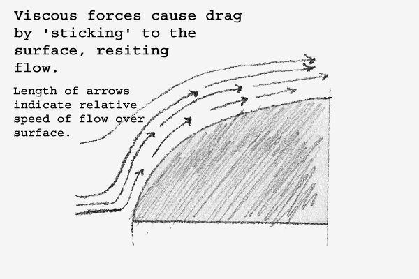
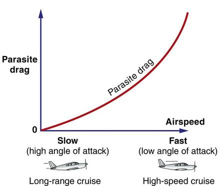

By Ritvik Agarwal
This drag is primarily created due to the formation of wingtip vortices. Basically, a considerable amount of fuel/energy that is meant to be spent to increase the aircraft speed or lift, is instead spent to create these vortices. Hence, the drag.
This drag is due to shape, frontal area, and surface friction. Unusual closeness of two surfaces also causes drag, known as Interference drag(as is the case of dihedral wings with high dihedral angle).
This drag is caused because of building up of a high pressure zone in front of the surfaces and a corresponding low pressure zone behind them. Thus, the aircraft is acted upon by a pressure force directed backwards.